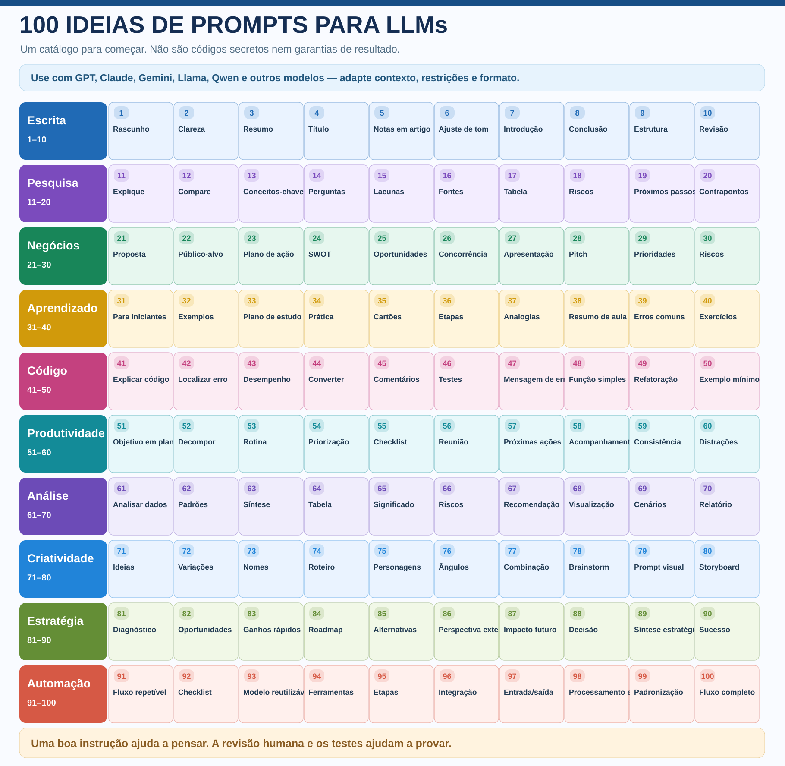

100 ideias de prompts para LLMs
Um catálogo rápido de tarefas possíveis, dividido em dez áreas. Escolha uma ideia, personalize o objetivo e confira a resposta. Os exemplos não são códigos secretos e não dependem de Claude, GPT ou qualquer marca específica. Para entender melhor as técnicas por trás de um bom pedido, veja também o guia de 30 estratégias.


1. Escrita
Rascunho
Escreva um rascunho de [tipo de texto] sobre [tema], para [público], com tom [tom].
Clareza
Reescreva [texto] para melhorar a clareza sem mudar o significado nem acrescentar fatos.
Resumo
Resuma [texto] em até [N] pontos, preservando as informações essenciais.
Título
Sugira cinco títulos claros para [texto ou projeto], sem prometer algo que o conteúdo não entrega.
Notas em artigo
Transforme estas notas [notas] em um artigo coerente, sinalizando lacunas de informação.
Ajuste de tom
Adapte [texto] para um tom profissional e cordial, preservando a intenção original.
Introdução
Crie uma introdução breve para [tema] que explique por que ele importa para [público].
Conclusão
Escreva uma conclusão para [texto] que sintetize os pontos apresentados, sem introduzir fatos novos.
Estrutura
Organize [tema] em tópicos e subtópicos, com progressão didática.
Revisão
Revise a gramática e o estilo de [texto]. Aponte alterações que afetem o sentido.
2. Pesquisa
Explique
Explique [tema] em linguagem simples e defina os termos técnicos usados.
Compare
Compare [A] e [B] por critérios explícitos; não invente dados ausentes.
Conceitos-chave
Liste os conceitos indispensáveis para compreender [tema] e suas relações.
Perguntas
Proponha perguntas de pesquisa específicas e verificáveis sobre [tema].
Lacunas
Identifique questões ainda não respondidas neste material [fonte].
Fontes
Resuma as fontes fornecidas [fontes], indicando quais afirmações cada uma sustenta.
Tabela
Organize em tabela os fatos comprovados sobre [tema] com suas respectivas fontes.
Riscos
Aponte possíveis erros de interpretação de [dados ou texto].
Próximos passos
Sugira etapas concretas para aprofundar o estudo de [tema].
Contrapontos
Apresente argumentos a favor e contra [hipótese], separando evidências de opiniões.
3. Negócios
Proposta
Monte uma proposta de valor para [produto], considerando [público] e [necessidade].
Público-alvo
Descreva possíveis perfis de clientes para [produto], marcando suposições a validar.
Plano de ação
Crie um plano inicial para alcançar [objetivo] com [recursos e prazo].
SWOT
Monte uma análise SWOT de [negócio] usando apenas os dados [dados].
Oportunidades
Liste oportunidades potenciais em [mercado] e como testar cada hipótese.
Concorrência
Compare [concorrentes] com os critérios [critérios] e fontes disponíveis.
Apresentação
Estruture uma apresentação curta de [projeto] para [audiência].
Pitch
Redija um pitch de 60 segundos para [solução], sem promessas não comprovadas.
Prioridades
Ordene iniciativas por impacto estimado, custo e risco; explicite premissas.
Riscos
Liste os riscos de [plano] e medidas práticas de mitigação.
4. Aprendizado
Para iniciantes
Explique [assunto] como se eu estivesse começando, com um exemplo concreto.
Exemplos
Dê três exemplos de [conceito] em situações cotidianas.
Plano de estudo
Crie um plano de estudo de [duração] para aprender [assunto], com revisões.
Prática
Faça cinco perguntas progressivas para avaliar minha compreensão de [tema].
Cartões
Crie dez flashcards com perguntas e respostas curtas sobre [tema].
Etapas
Divida [tarefa ou conceito] em etapas simples e conectadas.
Analogias
Use uma analogia para explicar [conceito] e diga onde ela deixa de funcionar.
Resumo de aula
Resuma os pontos principais de [material], com definições e exemplos.
Erros comuns
Quais erros iniciantes cometem ao aprender [tema]? Como percebê-los?
Exercícios
Proponha exercícios sobre [tema] com gabarito explicado e critérios de correção.
5. Código
Explicar código
Explique o que faz este código [código], bloco por bloco, indicando entradas e saídas.
Localizar erro
Investigue este erro [mensagem e código]; apresente hipóteses e como testá-las.
Desempenho
Analise gargalos prováveis de [código] e proponha medições antes de otimizar.
Converter
Converta [código] de [linguagem A] para [linguagem B] preservando comportamento.
Comentários
Adicione comentários úteis ao código [código] sem descrever trivialidades.
Testes
Crie testes para [função], incluindo casos extremos e resultados esperados.
Mensagem de erro
Explique esta mensagem de erro [erro] e proponha uma sequência de diagnóstico.
Função simples
Implemente uma função para [tarefa] com assinatura, validação e exemplo.
Refatoração
Refatore [código] mantendo interface e comportamento. Mostre diferenças relevantes.
Exemplo mínimo
Crie um exemplo mínimo e executável para demonstrar [conceito].
6. Produtividade
Objetivo em plano
Transforme [objetivo] em ações verificáveis, responsáveis e prazos.
Decompor
Divida [projeto] em tarefas pequenas com dependências identificadas.
Rotina
Sugira uma rotina para [atividades] dentro dos horários [horários].
Priorização
Priorize [tarefas] por impacto, urgência, esforço e dependências.
Checklist
Crie um checklist para [processo] com critérios de conclusão.
Reunião
Resuma [ata ou notas] em decisões, pendências, responsáveis e prazos.
Próximas ações
Identifique as três próximas ações possíveis em [projeto].
Acompanhamento
Desenhe um quadro de acompanhamento para [objetivo] com indicadores.
Consistência
Proponha um procedimento repetível para manter [atividade] consistente.
Distrações
Identifique gargalos e interrupções prováveis em [rotina] e soluções testáveis.
7. Análise
Analisar dados
Analise [dados] e diferencie observações, hipóteses e conclusões.
Padrões
Identifique padrões em [dados], sem afirmar causalidade por mera correlação.
Síntese
Resuma os principais achados desta análise [análise] com suas limitações.
Tabela
Organize [dados] numa tabela comparativa com unidades e período.
Significado
Explique o significado de [indicadores] e quando podem enganar.
Riscos
Destaque riscos e incertezas que alteram a decisão sobre [tema].
Recomendação
Sugira recomendações proporcionais às evidências de [dados].
Visualização
Proponha um gráfico apropriado para [variáveis] e justifique os eixos.
Cenários
Mostre cenários otimista, base e pessimista usando premissas explícitas.
Relatório
Transforme [análise] num relatório curto com método, achados e limites.
8. Criatividade
Ideias
Gere dez ideias iniciais para [objetivo] dentro das restrições [limites].
Variações
Crie variações de [conceito] com estilos ou enfoques realmente diferentes.
Nomes
Sugira nomes para [projeto], com significado e critérios de escolha.
Roteiro
Estruture um roteiro de [duração] para [tema e público].
Personagens
Crie personagens originais para [história] com motivações distintas.
Ângulos
Proponha ângulos pouco óbvios para abordar [assunto] com respeito aos fatos.
Combinação
Combine ideias [A] e [B] num conceito novo e executável.
Brainstorm
Conduza um brainstorming em duas rodadas: ideias livres e seleção por critérios.
Prompt visual
Descreva uma cena para ilustração com composição, luz e atmosfera.
Storyboard
Divida [roteiro] em cenas com objetivo visual e duração estimada.
9. Estratégia
Diagnóstico
Avalie a situação atual de [projeto] com base em [dados] e identifique gargalos.
Oportunidades
Identifique oportunidades com maior valor potencial para [objetivo].
Ganhos rápidos
Sugira ganhos rápidos que não comprometam a solução de longo prazo.
Roadmap
Crie um roteiro por fases para [objetivo] com marcos verificáveis.
Alternativas
Compare caminhos possíveis considerando risco, tempo e recursos.
Perspectiva externa
Avalie este plano como consultor crítico e questione premissas frágeis.
Impacto futuro
Estime efeitos de longo prazo de [decisão] sob cenários descritos.
Decisão
Monte uma matriz de decisão para [opções] com pesos e justificativas.
Síntese estratégica
Resuma implicações estratégicas de [dados] em uma página.
Sucesso
Defina critérios observáveis para considerar [projeto] bem-sucedido.
10. Automação
Fluxo repetível
Desenhe um fluxo repetível para [tarefa] com entradas e saídas claras.
Checklist
Converta o processo [processo] em checklist executável.
Modelo reutilizável
Crie um modelo reutilizável para a tarefa [tarefa] com campos editáveis.
Ferramentas
Sugira ferramentas para [processo] e seus requisitos de acesso.
Etapas
Descreva o passo a passo de [automação] com pontos de confirmação.
Integração
Proponha como integrar [sistemas] com permissões e tratamento de erros.
Entrada/saída
Defina entradas, saídas e validações para [fluxo automatizado].
Processamento em lote
Projete um processamento em lote para [itens], com retomada em falhas.
Padronização
Padronize [processo] para reduzir variação sem eliminar exceções.
Fluxo completo
Combine [etapas] num fluxo único, com testes, logs e revisão humana.
Abra cada tópico para consultar um exemplo pronto para adaptar. Os campos entre colchetes devem ser preenchidos com seu contexto.